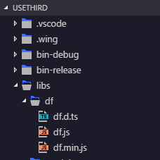
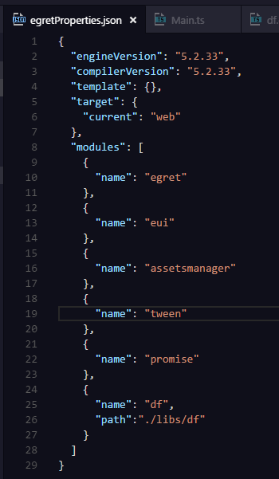

打开egret项目在libs文件夹下新建df文件夹，放入df.d.ts, df.ts, df.min.js文件

打开egretProperties.json添加df,如下图配置

--->>>api doc<<<---
所有api皆在df命名空间下，见下面调用示例：
类Pool 单例方法
调用示例df.Pool.instance.debug()
属性无
方法
/**
* 拿取对象
* @param cls 类名，非实例
*/
getFrom(cls: any): any;
/**
* 归还对象
* @param instance 实例，非类名
*/
backTo(instance: any): void;
/**
* 清空整个对象池
*/
clear(): void;
/**
* 测试，对象池打印
*/
debug(): void;
Generated using TypeDoc